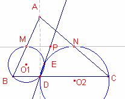
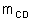

Problema 310
- 0.1 Sea AD la altura relativa al lado BC del triángulo acutángulo ABC. M y N son los puntos medios de los lados AB y AC, respectivamente. Sea E el segundo punto de intersección de las circunferencias circunscritas a los triángulos BDM y CDN.
Muestra que la recta DE pasa por el punto medio de MN.
X Olimpíada Matemática Rioplatense
San Isidro, 13 de Diciembre de 2001
Nivel I – Segundo Día
Solución de Ricard Peiró i Estruch Profesor de Matemáticas del IES 1 de Xest (València) (en español):

Consideremos los vértices del triángulo  con las siguientes coordenadas cartesianas:
con las siguientes coordenadas cartesianas:  .
.
Las coordenadas del pie de la altura son
Las coordenadas del punto medio M del segmento  y N punto medio del segmento son: ,
y N punto medio del segmento son: ,  .
.
Las coordenadas del punto medio P del segmento son
Determinemos el centro  de la circunferencia circunscrita al triángulo :
de la circunferencia circunscrita al triángulo :
La recta mediatriz del segmento  tiene ecuación .
tiene ecuación .
La recta mediatriz del segmento  tiene ecuación
tiene ecuación  .
.
La intersección de las rectas  ,
,  es el centro de la circunferencia circunscrita al triángulo . Sus coordenadas son:
es el centro de la circunferencia circunscrita al triángulo . Sus coordenadas son:
Determinemos el centro de la circunferencia circunscrita al triángulo :
La recta mediatriz del segmento  tiene ecuación .
tiene ecuación .
La recta mediatriz del segmento  tiene ecuación
tiene ecuación  .
.
La intersección de las rectas 
Sea E el punto de intersección de ambas circunferencias (distinto de D)
La recta que pasa por los puntos D, E es perpendicular al segmento  .
.
La recta que pasa por D, E es la recta que pasa por D y tiene por vector director  .
.
Simplificando el vector director es  ).
).
La ecuación de la recta que pasa por los puntos D, E tiene ecuación:
El punto es de la recta r ya que satisface su ecuación:
 .
.
Con Cabri:
Figura barroso310.fig
Applet created on 1/05/06 by Ricard Peiró with CabriJava